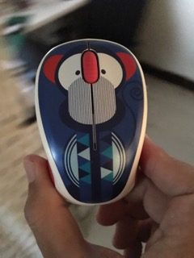

<!DOCTYPE html>
<html lang="zh-TW" dir="ltr">
  <head>
    <meta charset="utf-8">
    <meta name="viewport" content="width=device-width, initial-scale=1, minimum-scale=1, maximum-scale=1" >
    <title>xmas</title>
    <script src="https://cdn.jsdelivr.net/npm/@tensorflow/tfjs"></script>
    <link rel="stylesheet" href="css/style.css">
  </head>
  <body>
    
    <div class="drawBox">

      <!-- <canvas id="resizeCanvas" width="320" height="320"></canvas> -->
      <!-- <video id="myVideo" autoplay="autoplay"></video> -->
      <video id="video" width="320" height="320" autoplay playsinline></video>
      <canvas id="canvas" width="320" height="320"></canvas>
    </div>
    <section class="get_cam">
      <!-- <div class="get_cam__bg"></div> -->
      <div class="get_cam__black_mask"></div>
      <div class="get_cam__icon-camera">
        <!--  -->
        <!--  -->
      </div>
      <div class="get_cam__icon-welcome"></div>
      <div class="get_cam__text_box"></div>
      <button class="get_cam__btn-getcam" id="button"></button>
    </section>
    <!-- <section class="start_cam">

    </section>
    <section class="play_canvas">

    </section>
    <section class="show_result">

    </section> -->
    <!--  -->

    <div class="loading">
      
    </div>
    <script src="js/lib/jquery-3.3.1.min.js"></script>
    <script src="js/lib/createjs.min.js"></script>
    <script src="js/lib/jquery.preload.min.js"></script>
    <script src="https://webrtc.github.io/adapter/adapter-latest.js"></script>
    <script src="js/main.js"></script>
  </body>
</html>
